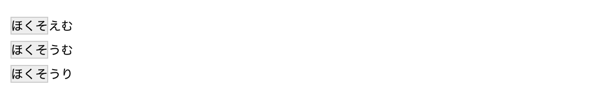
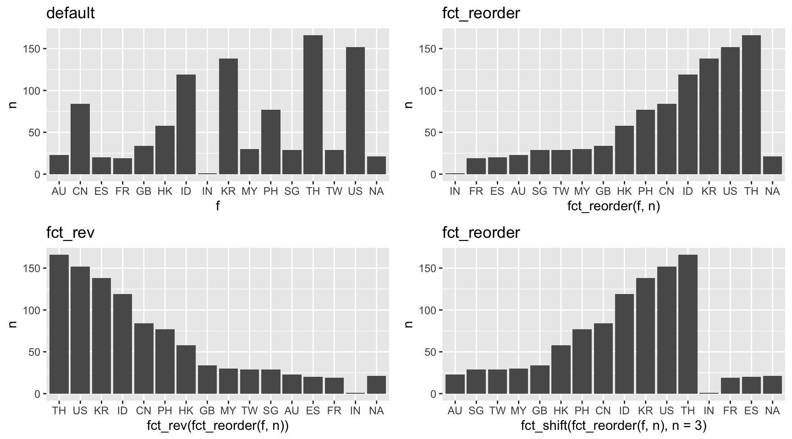

# 引用符によって囲んだ文字が文字データとして扱われる
"こんにちは"[1] "こんにちは"class('引用符で囲む')[1] "character"これまではtidyverseで利用可能な、データ操作に特化したパッケージの働きについて見てきたが、この章では前半に文字列、因子データの処理としてstringrパッケージおよびforcatsを導入する。また後半では日付・時間のデータを扱うためのlubridateパッケージを紹介する。これらのパッケージはすべてtidyverseに含まれており、library(tidyverse)で利用可能になる。パッケージの関数は単一で利用しても便利であるが、パイプ演算子やdplyr、purrrといったパッケージと組み合わせることで、より利用範囲を広げられるだろう。
データ分析において文字列は、性別や曜日などの決まった項目が用いられるものからユーザ名のように利用可能な文字や長さに制限があるもの、アンケートの回答結果など様々だ。文字列の操作には結合や分割、検索、置換などがある。まずはRにおける文字列データの基本を覚えよう。
Rでは文字列を場合、引用符により文字列を囲む必要がある。引用符は一重引用符 (シングルクオート ')でも二重引用符 (ダブルクオート ")でも構わないが、文字列を囲む際はその種類を揃えておかなければならない。
# 引用符によって囲んだ文字が文字データとして扱われる
"こんにちは"[1] "こんにちは"class('引用符で囲む')[1] "character"引用符を揃えない限り、Rコンソールは文字列の入力を受け付ける状態となる。始まりと終わりと引用符の種類が揃っていれば良いと先に述べたが、極力ドキュメントやプロジェクト中で引用符の種類は変更しないことが望ましい。
"引用符の種類は統一しておく'
# +では文字列の中で引用符を利用するにはどうするか。これは文字に含ませる引用符と異なる引用符を囲み文字に採用するか、バックスラッシュ記号 (“\”) で引用符をエスケープすることで可能となる。
# cat()は与えられた文字列をコンソールに出力する標準出力のための関数
cat("引用符 ' を使う")引用符 ' を使うcat('引用符 " を使う')引用符 " を使う# バックスラッシュによるエスケープも可能
cat('引用符 \' を使う')引用符 ' を使う文章を区切るための改行は、Rでは\nで表現する。\nで一行分の改行となる。
cat("こんにちは。\n今日は天気が良いですね。")こんにちは。
今日は天気が良いですね。tidyverseにはstringrパッケージが文字列の処理に特化したパッケージとして用意される。本書でもこのパッケージを利用した例を紹介するが、stringrの関数が提供する正規表現の機能は、名称の類似したstringiが元となっている。興味のある読者はstringiの関数やドキュメントを参照すると良い。
stringrパッケージの関数による文字列操作はRで標準利用可能な関数としても提供されているものが多いが、標準で利用できる関数はパイプ処理と組み合わせて利用することを想定していない。またstringrではstringiパッケージがサポートするIUC (International Components for Unicode)ライブラリの機能を利用できる。ICUライブラリはユニコードに関するさまざまな処理や操作に優れている。また、いくつかのRの標準関数が因子型のデータを入力値として利用できないのに対して、stringrは文字列型と同様に処理するという違いもある。
ここからはstringrパッケージを使った文字列の操作方法について紹介していこう。また、一部でstringiパッケージの関数を参照することもあるが、stringrパッケージのインストールが済んでいれば追加でインストールする必要はない。stringrパッケージのほとんどの関数の多くはstr_*()で実行される。str_の接頭辞のあとは関数が行う処理の内容を示している。
library(stringr)str_c()は、引数に与えた複数の文字列を一つの文字列に結合する関数である。結合の際に文字列の間に任意の文字を指定可能であり、これはsep引数で指定する。既定値は”“(空白文字列)となっている。引数内で複数の要素をもつベクトルが与えられた時、結合はベクトルの各要素に対して行われる。
# 引数に与えられた文字を結合する
str_c("こんにちは", "今日の天気は", "晴れです")[1] "こんにちは今日の天気は晴れです"# sep引数で文字の区切りとなる位置に指定した文字を挿入する
str_c("こんにちは", "今日の天気は", "晴れです", sep = "_")[1] "こんにちは_今日の天気は_晴れです"# 長さが異なるベクトルが与えられた時、要素は再利用される
# 返り値は要素の数が最も多いベクトルに合わせて出力される
str_c("こんにちは今日の天気は",
c("晴れ", "曇り", "雨"),
"です")[1] "こんにちは今日の天気は晴れです" "こんにちは今日の天気は曇りです"
[3] "こんにちは今日の天気は雨です" collapse引数を利用することで、返り値が複数の要素になる出力においても、単一のベクトルとして結合が行われる。collapseに指定した文字は、入力に与えられた要素と要素をつなぐ文字列として利用される。
# 3つの長さのベクトルをcollapse引数で与えた文字列によって単一のベクトルに結合する
str_c("こんにちは今日の天気は",
c("晴れ", "曇り", "雨"),
"です",
collapse = "。")[1] "こんにちは今日の天気は晴れです。こんにちは今日の天気は曇りです。こんにちは今日の天気は雨です"同じく、str_flatten()も与えられた文字列の要素を結合して一つの文字列として返却する。
str_flatten(c("あ", "い", "う", "え", "お"))[1] "あいうえお"str_flatten(c("あ", "い", "う", "え", "お"), collapse = "_")[1] "あ_い_う_え_お"文字列から一部の文字を取り出すにはstr_sub()およびstr_subset()を使う。str_sub()は引数startとendそれぞれで抽出したい文字の位置を指定する。この際、負値を与えることも可能であり、例えばstartに-2を与えると、文字列の末尾から2文字分遡った位置が起点となる。
str_sub(string = "こんにちは", start = 3, end = 5)[1] "にちは"# 負値により、対象が文字の末尾になる
str_sub(string = "こんにちは", start = -2)[1] "ちは"文字の位置ではなく、対象の文字列、パターンが含まれるものを取り出すにはstr_subset()を使う。また、値そのものではなく、該当箇所の位置に興味がある場合はstr_which()を用いると良い。
# 「ん」を含んだ文字列の要素を返却する
str_subset(c("おはよう", "こんにちは", "こんばんは"),
pattern = "ん")[1] "こんにちは" "こんばんは"# 2, 3番目の要素に「ん」が含まれる
str_which(c("おはよう", "こんにちは", "こんばんは"),
pattern = "ん")[1] 2 3「こんにちは」は長さが5の文字列であるがstringrでは文字の長さを数えるのにstr_length()を利用する。
str_length(string = "こんにちは")[1] 5str_length(c("つくば", "Tsukuba", "筑波"))[1] 3 7 2入力に欠損が与えられた場合にはNAが返される。これはRに標準で利用可能な関数として用意されるnchar()と同じ挙動であるが、str_length()は因子型のデータを与えた場合にも文字列のカウントを実行する(nchar()は因子型のデータの入力を受け付けない)。
str_length(NA)[1] NAanimals <-
c("cat", "dog", "mouse", "boar") %>%
factor()
str_length(animals)[1] 3 3 5 4文字列中に含まれる単語や一文の数を数える処理はstr_count()でも実行できる。この関数は引数patternで指定した文字列が含まれる回数を数えるもので、次の処理ではベクトルの各要素に含まれる「ん」の文字数を数えている。
str_count(c("こんにちは", "こんばんは", "こん"),
pattern = "ん")[1] 1 2 1対象の文字列の中の一部、あるいは特定の要素に対してのみ処理を実行する、という時にはパターンマッチを利用した処理が有効である。例えばパターンマッチの方法には、先にstr_count()の例で見たように特定の文字列を与えることもできるが、stringrではより柔軟に文字列のマッチングを行える仕組みが備わっている。
stringrパッケージで利用可能な関数の引数patternは、次の方法によるパターンマッチが可能である(既定ではregex()を用いて指定する正規表現が適用される)。これらの方法と関連する話題について詳細を見ていくために、まずは4つの文字を含んだ文字列ベクトルを用意しよう。続いてstr_detect()を用いながら、引数patternに与える処理を変えながら、それぞれの挙動を確認する。
fixed(): 与えられた文字を直接評価するパターンマッチ
regex(): 正規表現によるパターンマッチ。ICUの正規表現規則に従う
coll(): ロケールを考慮したパターンマッチ
boundary(): 文章の境界、すなわち文字 character、単語 word、改行 line_breake、段落 sentenceで指定するパターンマッチ
str_detect()は指定したパターンが対象の文字列に含まれるかを判定する関数だ。返り値は論理値である。パターンと一致すればTRUEとなる。最初の例では、“^a”をpatternに指定した。2番目はfixed()の内部で同じ文字列を指定したが、結果は異なっている。fixed()は、patternに与えられた文字列を直接パターンマッチに利用するためである。“^a”で使っている”^“は、後続のパターンが先頭文字を示す記号として評価されるもので、対象となるstringsの中にはその文字は含まれない。
patternに指定可能な関数には、boundary()を除いてignore_case引数が用意されている。これはアルファベットの大文字と小文字を区別しないためのオプションで、通常はFALSEが与えられる(大文字と小文字を厳密に区別する)。3番目の例ではregex()を使っているいるが、igreno_caseをTRUEとし、先頭が”a”となる大文字・小文字がある場合にTRUEを返すようになっている。
# \u0061 はaのユニコードエスケープ
strings <-
c("a", "\u0061", "A", "あ")
# 既定値はregex()の指定と等しい
str_detect(string = strings,
pattern = "a")[1] TRUE TRUE FALSE FALSE# fixed()を使用
str_detect(string = strings,
pattern = fixed(pattern = "^a"))[1] FALSE FALSE FALSE FALSE# regex()を明示して使用。先頭がaまたはAで始まる文字にマッチ
str_detect(string = strings,
pattern = regex(pattern = "^a",
ignore_case = TRUE))[1] TRUE TRUE TRUE FALSEまたregex()は他にmultiline、comments、dotall引数を備えている。これらはいずれも論理値を指定する。既定ではFALSEが与えられている。multilneが与えられた要素に改行(“\n”)があった時に、改行ごとにパターンマッチを評価するかを、commentsはTRUEの時に、要素に含まれる、先頭文字の”#“記号および空白文字列を無視する、dotallは”.”を文字として評価しないことをそれぞれ意味している。これらのオプションはregex()は、“^”や”$“、”.”といった記号が次に述べるように、正規表現の記号と区別するために機能する。
str_detect("今日の天気は晴れです。\n気温は26度を超えます。",
regex("です。$", multiline = TRUE))[1] TRUEstr_detect("# 今日の天気は晴れです。",
regex("です。$", comments = TRUE))[1] TRUEstr_extract("# 今日の天気は晴れです\n",
regex("晴れです.", dotall = FALSE))[1] NAstr_extract("# 今日の天気は晴れです\n",
regex("晴れです.", dotall = TRUE))[1] "晴れです\n"続いて、coll()をpatternに指定した場合は次のような結果を返す。coll()は、ロケール(3章参照)を考慮したパターンマッチを適用する関数で、例えば、大文字のIはユニコード表記では”\u49”となるがトルコ語などはIと区別してİを利用する。これはユニコード表記では”\u0130”である。どちらも文字としてはIを示すため、localeにトルコの言語ロケールである”tr”を指定するとマッチングする。また、ここで指定可能なロケール一覧はstringi::stri_locale_list()によって確認できる。
i <-
c("I", "\u0130")
str_extract(string = i,
pattern = coll(pattern = "I"))[1] "I" NA str_extract(string = i,
pattern = coll(pattern = "i", ignore_case = TRUE, locale = "tr"))[1] NA "İ"最後にboundary()の例であるが、これは文字の分割を行うstr_split()の節で紹介する。
正規表現は文字列のパターンを表現する方法の一つである。文字列の中から特定の文字を検出したり、検出した文字を置換する、といった処理が正規表現を通して実行できる。正規表現は、Rの標準機能にも備わっているが、stringrパッケージが実装するICUのライブラリはより自由度の高い文字列パターンを扱うことができる。実際にこの章で紹介してきた関数で引数patternがあるものでは、同様の指定と処理が可能である。正規表現の詳細については奥が深く、すべてを理解することは困難であるが、ここで述べるような基本的な利用方法や、ある程度の内容について理解しておくだけで充分な価値がある。
3つの要素を文字ベクトルから引数patternに指定した文字「ほくそ」が含まれているかを判定する処理は以下のようになる。
hoxom <-
c("ほくそえむ", "ほくそうむ", "ほくそうり")
str_detect(hoxom, "ほくそ")[1] TRUE TRUE TRUEベクトルhoxomに格納したすべての文字列は「ほくそ」を含んでいるため、この結果はすべて真となる。では次の例はどうだろうか。
str_detect(string = hoxom, pattern = "む$")[1] TRUE TRUE FALSE今度は3つ目の「ほくそうり」でFALSEを返すようになった。上記のコードで与えたパターンは「む」で終わる、である。記号$は文字列の終わりを示している。この他にも正規表現で利用可能な記号はいくつかの種類があり、メタ文字と呼ばれる正規表現の中で利用できる修飾子である。メタ文字を利用したパターンマッチの処理の例をいくつか見てみよう。
# xの要素はすべて「ほくそ」で始まるため、任意の一文字を示す . を使うとマッチしなくなる
str_detect(string = hoxom, pattern = ".ほくそ")[1] FALSE FALSE FALSE# 先頭および末尾の文字列を、^と$で指定したパターン
# 「ほくそ」と「む」の中には別の文字列が含まれていても良いとする
str_detect(string = hoxom, pattern = "^ほくそ.+む$")[1] TRUE TRUE FALSEfruits <-
c("バナナ", "リンゴ", "パイナップル")
# 「ナ」が含まれる文字列にTRUEを返す
str_detect(fruits, "ナ")[1] TRUE FALSE TRUE# {2}は「ナ」の2回繰り返しを示す
# バナナはナが連続して出現するが、パイナップルはナが1回しか出現しない
str_detect(fruits, "ナ{2}")[1] TRUE FALSE FALSE# 3回以上4回未満の「ナ」の出現はいずれの要素にも含まれない
str_detect(fruits, "ナ{3,4}")[1] FALSE FALSE FALSEprefs <-
c("神奈川県", "東京都", "沖縄県", "岡山県", "富山県")
# 「県」で終わり、山または川を含んだ文字列にマッチ
str_detect(prefs, "(山|川)県$")[1] TRUE FALSE FALSE TRUE TRUE| 修飾子 | 意味 | 指定の種類 |
|---|---|---|
| ^ | 以後の文字が先頭にある | 位置 |
| $ | 以前の文字が後尾にある | 位置 |
| . | 任意の一文字 | 対象 |
| | | 複数のパターンに区切る | 対象 |
| (), [], {} | パターンをグループ化する | 対象 |
| * | 直前パターンをn回繰り返し(n >= 0) | 繰り返し |
| ? | 直前パターンをn回繰り返し(n = 0, 1) | 繰り返し |
| + | 直前パターンをn回以上の繰り返し | 繰り返し |
| {n} | 直前パターンをn回繰り返し | 繰り返し |
| {n, } | 直前パターンをn回以上の繰り返し | 繰り返し |
| {n, m} | 直前のパターンをn回以上m回以下繰り返し | 繰り返し |
指定したパターンが文字列中のどの位置でマッチしているかを確認する方法として、stringrではstr_view()あるいはstr_view_all()が用意されている。この関数はstr_detect()などの関数同様、対象の文字列とパターンマッチに用いる文字列を指定するが、実行するとウェブブラウザまたはRStudioを利用している場合はViewerパネル中に、マッチする箇所を表示する画面が出現する。グレーでハイライトされている箇所が引数patternで指定した文字列とマッチする箇所を示している。引数matchはstringに与えられた文字列中にマッチする要素だけ、あるいはマッチしない要素だけを表示するかを選択するオプションでり、論理値で指定する。既定ではNAが与えられ、いずれの要素も表示する。
str_view(string = hoxom, pattern = "ほくそ")
str_view(string = c("ほくそ", "もなぎ"),
pattern = "ほくそ", match = FALSE)
対象の文字が特定の文字列の組み合わせで生成されている場合には、文字クラスあるいはPOSIX文字クラスを利用したパターンマッチが可能になる。文字クラスでは、ブラケット ([])で挟んだ範囲の文字をパターンとみなし、更に連続する文字列の場合、例えばAからZまでのアルファベッドを指定する際にABC..Zとするのではなく、A-Zと対象の文字列の範囲を-で文字をつなぐことで複数の文字をパターンに含めることができる。
| 文字クラス | 対象 |
|---|---|
| [0-9] | アラビア数字 |
| [a-z] | 小文字アルファベット |
| [A-Z] | 大文字アルファベット |
| [ぁ-ん] | ひらがな |
| [ァ-ヶ] | カタカナ |
| [一-龠] | 漢字 (すべての漢字に対応できるわけではない) |
| [\x01-\x7E] | 1バイト文字 |
strings <-
c("ひらがな", "カタカナ", "漢字", "ABC", "abc", "123", "a2c4e6")
# 大文字のA, B, Cのいずれかを含んだパターン
str_detect(strings, "[A-C]")[1] FALSE FALSE FALSE TRUE FALSE FALSE FALSE# ひらがなにマッチするパターン
str_detect(strings, "[ぁ-ん]")[1] TRUE FALSE FALSE FALSE FALSE FALSE FALSE# 複数の文字クラスやメタ文字を扱うこともできる
# アルファベットのAからZまで(大文字、小文字)を含んだパターンの検出
# 「ABC」, 「abc」, 「a2c4e6」にマッチする
str_detect(strings, "[A-Za-z]")[1] FALSE FALSE FALSE TRUE TRUE FALSE TRUEstr_detect(strings, regex("[A-Z]", ignore_case = TRUE))[1] FALSE FALSE FALSE TRUE TRUE FALSE TRUE# 先頭および末尾が数値で、長さが3の文字とマッチするパターン
# 「123」に該当
str_detect(strings, "^[0-9]{3}$")[1] FALSE FALSE FALSE FALSE FALSE TRUE FALSE# ひらがな、カタカナ、漢字の一部を含んだパターンを検出
# 「ひらがな」, 「カタカナ」, 「漢字」にマッチ
str_detect(strings, "[ぁ-んァ-ヶ一-龠]")[1] TRUE TRUE TRUE FALSE FALSE FALSE FALSEPOSIX文字クラスは一致するパターンを特定の種類にまとめ、特殊な表記を行うことで複数の文字を一度に対象パターンとして取り扱う。POSIX文字クラスは文字クラス同様、ブラケットを利用した記述を利用するが、加えてコロン (:)によってPOSIX文字クラス名を囲むという特徴がある。Rで利用可能なPOSIX文字クラスについて表XXに示した。
| POSIX文字クラス | 対象 |
|---|---|
| [:alnum:] | アルファベットと数値([:alpha:] + [:digit:]) |
| [:alpha:] | 大小文字アルファベット([:upper:] + [:lower:]) |
| [:upper:] | 大文字アルファベット |
| [:lower:] | 小文字アルファベット |
| [:digit:] | 数値 |
| [:blank:] | 空白文字、スペースとタブ |
| [:cntrl:] | 制御文字 |
| [:graph:] | 空白以外の文字 ([:alnum:] + [:punct:]) |
| [:print:] | 印字可能な文字([:graph:] + スペース) |
| [:punct:] | 補助符号を含めた句読点(! ” # $ % & ’ ( ) * + , - . /) |
| [:space:] | すべての空白文字 |
| [:xdigit:] | 16進数で認められている文字(0-9a-fA-F) |
strings <-
c("alphabet", "123456", "alnum789", "123 456")
str_extract(string = strings, pattern = "[[:alpha:]]")[1] "a" NA "a" NA str_extract(strings, "[[:digit:]]")[1] NA "1" "7" "1"str_extract(strings, "[[:space:]]")[1] NA NA NA " "ここで用いたstr_extract()は、パターンにマッチした箇所を文字列で返却する。もし対象の文字列に含まれるパターンが指定されない場合、欠損が与えられる。str_extract()ではメタ文字による繰り返しを指定しない場合は最初に該当した箇所の文字を返すが、これに対して、対象の文字列中ですべての該当箇所を返すようにするにはstr_extract_all()を利用すると良い。この関数の返り値はリストであるが、引数simplifyをTRUEとすることで各要素でマッチした箇所を含んだ行列になる。
# 対象文字列でマッチするすべての文字列をリストで返す
str_extract_all(string = strings, pattern = "[[:alpha:]]")[[1]]
[1] "a" "l" "p" "h" "a" "b" "e" "t"
[[2]]
character(0)
[[3]]
[1] "a" "l" "n" "u" "m"
[[4]]
character(0)# 各要素を行とし、マッチした箇所を含んだ行列として返却
str_extract_all(strings, "[[:alpha:]]", simplify = TRUE) [,1] [,2] [,3] [,4] [,5] [,6] [,7] [,8]
[1,] "a" "l" "p" "h" "a" "b" "e" "t"
[2,] "" "" "" "" "" "" "" ""
[3,] "a" "l" "n" "u" "m" "" "" ""
[4,] "" "" "" "" "" "" "" "" 複数の要素を与えた際、どの要素に対してマッチが行われているかを判断するために、str_which()を使う方法もある。
[WIP]
文字列の中には、思わぬ空白文字列や改行が含まれ、処理の邪魔となることがある。str_trim()やstr_squish()はこれらの余分な空白文字列や余分な改行を取り除く処理を実行する。次の文字列から、余分な改行や空白を取り除いてみよう。この文字列には、前後および途中で改行が与えられており、「でも」の後に空白文字列が与えられている。
# 前後および文章の中に空白を含んだ文字列ベクトルを用意する
(x <- c("\n こんにちは。今日は天気が良いですね。\nでも 明日は雨が降るらしいです \n\n\n"))[1] "\n こんにちは。今日は天気が良いですね。\nでも 明日は雨が降るらしいです \n\n\n"str_trim()は引数sideの指定により、除去を行う方向を指定する。既定値では文字列の両側を対象にする(“both”)が、他に左右の指定(“left”および”right”)が可能である。
# 文字列に含まれる空白文字の除去。既定値で両側の空白が対象になる
str_trim(x)[1] "こんにちは。今日は天気が良いですね。\nでも 明日は雨が降るらしいです"str_trim(x, side = "left")[1] "こんにちは。今日は天気が良いですね。\nでも 明日は雨が降るらしいです \n\n\n"さて、str_trim()によりいくつかの文字が取り除かれたが、依然として文章中に必要以上の空白が残っている。これはstr_squish()で、単一の空白文字列へと置換可能できる。
str_squish(x)[1] "こんにちは。今日は天気が良いですね。 でも 明日は雨が降るらしいです"特定の文字列や文字列の一部を任意の値に変更する処理を実行するためにstr_replace()が利用できる。この関数には引数patternとreplaceがあり、対象のパターン、置換後の文字を指定する。
str_replace("こんばんは",
pattern = "ばんは",
replacement = "にちは")[1] "こんにちは"str_replace()では、パターンに一致した箇所の置換を、最初に一致した箇所のみ対象にするが、すべての一致する箇所で置換を適用するにはstr_replace_all()を使う。
# 「こんばんは」中の「ん」を空白文字列に置換
# str_replace()では、最初の「ん」しか変更されない
str_replace("こんばんは", "ん", " ")[1] "こ ばんは"# str_replace_all()を用いることですべての箇所が置換の対象になる
str_replace_all("こんばんは", "ん", " ")[1] "こ ば は"またstr_replace_all()では、複数の置換パターンを与えることも可能だ。これは引数patternにc(対象文字列 = 置換後の文字列)の形で指定する。
# 複数のパターンの置換を同時に実行する
x <-
c("こんばんは", "こんにちは 今日は寒いですね")
str_replace_all(x,
c("こんばんは" = "今晩は", "寒い" = "暑い"))[1] "今晩は" "こんにちは 今日は暑いですね"次の例は、pattern引数に指定した住所文字列にマッチするパターンとして「東京都」「道」「府」「県」の4種を指定している。複数のパターンに対してマッチングを行うにはこのようにして|記号を用いて文字列を区切る。また京都府の場合には、2文字目の「京”都”府」にマッチしてしまうので、「都」を含んだ文字列でマッチングさせるのは「東京都」となるようにした。
address <-
c("東京都渋谷区桜ヶ丘",
"岡山県岡山市北区清心町",
"茨城県つくば市小野川",
"京都府舞鶴市字浜")
str_replace(string = address,
pattern = "(東京都|道|府|県).+",
replacement = "\\1")[1] "東京都" "岡山県" "茨城県" "京都府"正規表現では、パターンに含める文字列を括弧で囲むことで、マッチさせた文字列を利用できるようになる。これは後方参照と呼ばれる。マッチした文字列は、置換後の値を指定する引数replacementで\\1として呼び出している(\を繰り返すのはエスケープのため)。
マッチした箇所の文字列だけを除外するには、str_remove()を使う方法がある。これはstr_replace(string, pattern, replacement = "")と同じ働きをもつ。この関数も対象文字列中でマッチする全箇所を対象にするstr_replace_all()がある。
str_remove("文字列の「この部分」を削除する", "この部分")[1] "文字列の「」を削除する"# 最初にマッチした箇所を除外する
str_remove("Hello world", "o")[1] "Hell world"# 全てのマッチ箇所を除外の対象にする
str_remove_all("Hello world", "o")[1] "Hell wrld"このほか、文字列置換の特殊な用途として、欠損 NAを文字列に変換するstr_replace_na()が用意されている。
str_replace_na(c(NA_character_, "abc", "こんにちは"))[1] "NA" "abc" "こんにちは"str_split()およびstr_split_fixed()は、指定したパターンにマッチした箇所を起点に、対象の文字列を分割する関数である。ここで、分割に指定したパターンは、boundary()による文字の境界以外は返り値に含まれないという特徴がある。通常、対象の文字列でマッチする箇所があるたびに分割が行われるが、これは引数nに分割する数値を指定して制御できる(既定ではInfが指定される)。またこのオプションはstr_split()ではリストの要素数の指定となるが、str_split_fixed()では行列の列数となり、ユーザの指定が必要なものとなる。なおstr_split()の返り値はリストであるが、simplify引数でTRUEを指定するとstr_split_fixed()と同じく行列が返されるようになる。後続の処理の用途に応じて使い分けると良いだろう。
souseki_text <-
c("吾輩は猫である。名前はまだない。\nどこで生れたかとんと見当けんとうがつかぬ。何でも薄暗いじめじめした所でニャーニャー泣いていた事だけは記憶している。")# 「である。」および「つかぬ。」が出現する位置で要素を分割する
str_split(string = souseki_text, pattern = "(である|つかぬ)。")[[1]]
[1] "吾輩は猫"
[2] "名前はまだない。\nどこで生れたかとんと見当けんとうが"
[3] "何でも薄暗いじめじめした所でニャーニャー泣いていた事だけは記憶している。"# 引数nで返り値の要素数を制御
# n以上の分割は行われない
str_split(souseki_text,
"(である|つかぬ)。",
n = 2)[[1]]
[1] "吾輩は猫"
[2] "名前はまだない。\nどこで生れたかとんと見当けんとうがつかぬ。何でも薄暗いじめじめした所でニャーニャー泣いていた事だけは記憶している。"# str_split_fixed()の返り値は行列で、引数nにより列数を指定する
str_split_fixed(string = souseki_text,
pattern = "(である|つかぬ)。",
n = 2) [,1]
[1,] "吾輩は猫"
[,2]
[1,] "名前はまだない。\nどこで生れたかとんと見当けんとうがつかぬ。何でも薄暗いじめじめした所でニャーニャー泣いていた事だけは記憶している。"patternの指定にboundary()を利用する場合、入力に用いた文字は残り、分割だけが行われる。
str_split(souseki_text, boundary("character"))[[1]]
[1] "吾" "輩" "は" "猫" "で" "あ" "る" "。" "名" "前" "は" "ま" "だ" "な" "い"
[16] "。" "\n" "ど" "こ" "で" "生" "れ" "た" "か" "と" "ん" "と" "見" "当" "け"
[31] "ん" "と" "う" "が" "つ" "か" "ぬ" "。" "何" "で" "も" "薄" "暗" "い" "じ"
[46] "め" "じ" "め" "し" "た" "所" "で" "ニ" "ャ" "ー" "ニ" "ャ" "ー" "泣" "い"
[61] "て" "い" "た" "事" "だ" "け" "は" "記" "憶" "し" "て" "い" "る" "。"# マルチバイト文字を含んだ改行はうまくいかないことがある
str_split(souseki_text, boundary("line_break"))[[1]]
[1] "吾" "輩" "は" "猫" "で" "あ" "る。" "名"
[9] "前" "は" "ま" "だ" "な" "い。\n" "ど" "こ"
[17] "で" "生" "れ" "た" "か" "と" "ん" "と"
[25] "見" "当" "け" "ん" "と" "う" "が" "つ"
[33] "か" "ぬ。" "何" "で" "も" "薄" "暗" "い"
[41] "じ" "め" "じ" "め" "し" "た" "所" "で"
[49] "ニャー" "ニャー" "泣" "い" "て" "い" "た" "事"
[57] "だ" "け" "は" "記" "憶" "し" "て" "い"
[65] "る。" str_split("blah\nblah\nblah", boundary("line_break"))[[1]]
[1] "blah\n" "blah\n" "blah" str_split(souseki_text, boundary("word"))[[1]]
[1] "吾輩" "は" "猫" "で" "ある"
[6] "名前" "は" "まだ" "ない" "どこ"
[11] "で" "生れ" "たか" "とんと" "見当"
[16] "け" "ん" "と" "うがつ" "か"
[21] "ぬ" "何でも" "薄暗い" "じめじめ" "した"
[26] "所" "で" "ニャーニャー" "泣" "い"
[31] "て" "いた事" "だけ" "は" "記憶"
[36] "し" "て" "いる" str_split(souseki_text, boundary("sentence"))[[1]]
[1] "吾輩は猫である。"
[2] "名前はまだない。\n"
[3] "どこで生れたかとんと見当けんとうがつかぬ。"
[4] "何でも薄暗いじめじめした所でニャーニャー泣いていた事だけは記憶している。"文字列要素の順番や並び替えに関する関数は2つ存在する。str_order()
str_order(c("あ", "え", "い", "う", "え", "お", "あ", "お"),
locale = "ja_JP")[1] 1 7 3 4 2 5 6 8str_sort(c("あ", "え", "い", "う", "え", "お", "あ", "お"))[1] "あ" "あ" "い" "う" "え" "え" "お" "お"stringi::stri_order(c("い", "あ", "う", "あ"))[1] 2 4 1 3str_order(c("a", "b", "a"))[1] 1 3 2str_sort(letters) [1] "a" "b" "c" "d" "e" "f" "g" "h" "i" "j" "k" "l" "m" "n" "o" "p" "q" "r" "s"
[20] "t" "u" "v" "w" "x" "y" "z"日本語などを含んだ文字列が正常に表示できていない状態、文字化けを起こしている場合、str_conv()を使い、エンコードし直すことで問題に対応することができる。新たに指定するエンコードは引数encodingで、エンコード名を文字列で与えるが、その一覧はstringi::stri_enc_list()で確認できる。この中で日本語に関するエンコードとしては”EUC-JP”、“ISO-2022-JP”、“cp932”、“UTF-8”などがある。
x <- "\x82\xa0\x82\xa2\x82\xa4\x82\xa6\x82\xa8"
# str_conv()では元のエンコードを指定するだけで自動的に現在のエンコード形式に変更する
str_conv(x, encoding = "cp932")[1] "あいうえお"指定した書式（フォーマット）に基づき、与えられた値を文字列に変換する文字列フォーマットは、str_interp()ならびにstr_glue()により提供される。これらの関数は、Rオブジェクトの値を利用することも可能である。やや指定方法に癖があるが、慣れれば、柔軟に文字列の生成が行えるので大変便利な関数である。
str_interp()、str_glue()にはいくつかの利用方法がある。まず、Rオブジェクトの値を文字列中に利用するには、次のようにドル記号(“$”)に次いでブラケット(“{}”)で囲んだ中にRオブジェクトの変数名を与える。フォーマットを指定する場合、ドル記号の後、“{”ブラケットの前に”[“ブラケットの囲み文字でフォーマット指定を行う。指定可能なフォーマットはRで標準利用できるsprintf()と同じく、代表的なものを表XXに整理している。
my_name <- "真也"
age_year <- 1989
age_jp_year <- 1
# 3つのオブジェクトを文字列の中で利用する。
# age_jp_year, age_yearの2箇所でフォーマットを指定している(ともに整数)
str_interp("私の名前は${my_name}です。
平成$[02d]{age_jp_year}($[4d]{age_year})年の生まれです。")[1] "私の名前は真也です。\n平成01(1989)年の生まれです。"関数内で参照するRオブジェクトの評価は、文字列の出力時に行われるため、次のように修正を加えることもできる。
str_interp("$[4d]{age_year - 4}年の生まれです。")[1] "1985年の生まれです。"関数内部でオブジェクトを生成し、それを利用することも可能である。これにはlist()を使い、変数名と値の組み合わせを指定する。
str_interp("$[4d]{age_year}年の生まれです。",
env = list(age_year = 2000))[1] "2000年の生まれです。"str_glue()はglueパッケージが提供する機能を実装したもので、glue::glue()、glue::glue_data()と同じ引数オプションが利用できる。
str_glue(
"{when}の時刻は {datetime}\n",
"時刻を書式化すると{format(datetime, '%Y年%m月%d日 %X')}\n",
"日付は {format(datetime, '%Y年%m月%d日')} です\n",
"時刻は {format(datetime, '%X')} です",
when = "ただいま",
datetime = Sys.time()
)ただいまの時刻は 2022-05-02 16:57:10
時刻を書式化すると2022年05月02日 16:57:10
日付は 2022年05月02日 です
時刻は 16:57:10 ですdf_jyunishi <-
data.frame(
eto = c("子", "丑", "寅", "卯", "辰", "巳", "午",
"未", "申", "酉", "戌", "亥"),
stringsAsFactors = FALSE)
# データフレームの変数を参照する
# 複数の要素が与えられた時は、与えられた数の出力を行う
df_jyunishi %>%
str_glue_data("{2008 + 0:11}年の干支は{eto}です")2008年の干支は子です
2009年の干支は丑です
2010年の干支は寅です
2011年の干支は卯です
2012年の干支は辰です
2013年の干支は巳です
2014年の干支は午です
2015年の干支は未です
2016年の干支は申です
2017年の干支は酉です
2018年の干支は戌です
2019年の干支は亥です| 表記 | 表現 | 表記の例 |
|---|---|---|
| %a | 曜日名の略称 | Fri |
| %A | 完全な曜日名 | Friday |
| %b | 月名の略称 | Dec |
| %B | 完全な月名 | December |
| %c | 日付と時間 (“%a %b %e %H:%M:%S %Y”) | Fri Dec 25 14:00:00 2015 |
| %y | 西暦の下２桁 | 15 |
| %Y | 西暦 | 2015 |
| %m | 月 | 12 |
| %d | 日(１月の範囲) | 25 |
| %j | 日(１年の範囲) | 359 |
| %H | 時間(24時間) | 14 |
| %I | 時間(12時間) | 02 |
| %M | 分 | 01 |
| %p | 午前と午後の区分 | PM |
| %S | 秒 | 30 |
| %w | 曜日 | 5 |
| %x | 年月日 (“%m/%d/%y”) | 12/25/2015 |
| %X | 時刻 (“%H:%M:%S”) | 14:01:30 |
文字数を揃える際には、str_pad()、str_trunc()の2つの関数が役に立つ。これらはそれぞれ、桁揃え、丸め込みを行う関数で、処理を適用する方向を前後、両側あるいは中央のいずれかで指定できる。
例えば、1から20までの数値ですべての値を2桁に揃えるという時には、次のようにwidthで桁数、padに補間する任意の文字列、“0”を与えたstr_pad()を実行する。
str_pad(1:20, width = 2, pad = "0") [1] "01" "02" "03" "04" "05" "06" "07" "08" "09" "10" "11" "12" "13" "14" "15"
[16] "16" "17" "18" "19" "20"str_pad()では、補間する文字列を挿入する位置を指定するside引数を除いた引数の値はベクトル化される。すなわち次のように与えられた値と処理の組み合わせを返却する。
str_pad("a", width = c(5, 3, 4), pad = "_", side = "right")[1] "a____" "a__" "a___" str_pad("a", width = 2, pad = c("_", "-"), side = "right")[1] "a_" "a-"str_trunc()はstringの文字列の長さをwidthの数値になるよう調節する機能をもつ。既定では”…“が省略時の文字列として使われるが、これはellipsisによりユーザが変更可能である。
str_trunc("aaaaaa", 5)[1] "aa..."# side引数で省略位置の指定を行う
str_trunc("aaaaaa", 5, side = "center")[1] "a...a"# ellipsis引数で省略記号を変更する
str_trunc("aaaaaa", 5, ellipsis = "(略)")[1] "aa(略)"順序や項目に意味のある因子型データ (factor, カテゴリデータ)を扱うのに便利なパッケージとしてforcatsを取り上げる。因子型のデータは、3章においてdata.frame()で文字列を変数に与えた場合に変換される見たように、Rの多くの標準関数、統計処理(glm()などの関数で指定するformulaに文字列型データを与えた場合、因子型へ自動変換が行われる)で利用されている。
一方で、どのように因子型として扱われているのか、水準の並びがどうなっているのかを把握せずに処理を進めていくと予想外の結果を招く危険もある。そのためtidyverseのパッケージおよびtibble形式のデータフレームは文字列の因子型への変換を自動的には実行しない仕組みになっている。因子型への変換は、必要に応じて実行すれば良い。
forcatsには、ユーザの使い勝手を向上させた、因子型の操作関数が豊富に含まれている。その使い方を見ていくことにしよう。forcatsの関数の多くは第一引数に対象とする文字列または因子型のベクトルを指定する。また関数名にはfct_という接頭辞が与えられている。
library(forcats)まずforcatsの因子型変換の基本であるが、Rで標準利用可能な因子型への変換を行う関数as.factor()と異なる挙動として、要素が出現した順に水準を与える。これはロケールの設定により結果が異なる可能性のある挙動を制御するのに有効な仕様である。
# 標準関数ではロケールの設定を反映した並び替えが行われる
as.factor(c("A", "C", "B"))[1] A C B
Levels: A B Cas.factor(c("あ", "う", "い", "お"))[1] あ う い お
Levels: あ い う お# forcats::as_factor() では要素の出現した順番に水準が与えられる
as_factor(c("A", "C", "B"))[1] A C B
Levels: A C B# sort()を適用して水準を定義する処理
c("あ", "う", "い", "お") %>%
sort() %>%
as_factor()[1] あ い う お
Levels: あ い う おここからは架空SNSデータを用いてforcatsパッケージの因子操作関数の解説を行う。データの読み込みは3章で説明したreadrパッケージを使った方法と同じである。df_snsにはnationalityという列があり、この列はSNSへの投稿を行ったユーザの国籍をアルファベット2文字で示した国コードである。
df_sns <-
readr::read_csv("data/sns.csv")Rows: 1000 Columns: 6
── Column specification ────────────────────────────────────────────────────────
Delimiter: ","
chr (5): post_id, address, place_name, user_id, nationality
dttm (1): post_time
ℹ Use `spec()` to retrieve the full column specification for this data.
ℹ Specify the column types or set `show_col_types = FALSE` to quiet this message.df_sns$nationality[1:5]fct_count()は指定したベクトルの頻度をカウントするdplyr::count()関数と類似の機能をもつ関数である。count()との違いは、ベクトルで頻度を数える値を指定すること、集計後の水準が因子型になること、出力結果はデータフレームであるが、変数名が対象のベクトルを指すfと頻度のnからなることである。しかし水準の並びは規定では、頻度ではなく文字の並びとなるので注意が必要である。これは引数sortでTRUEを指定することでデータフレームの並びが頻度の降順になる。
df_count <-
fct_count(df_sns$nationality)
# ベクトルで与えた変数は因子として扱われる
df_count$f %>% levels() [1] "AU" "CN" "ES" "FR" "GB" "HK" "ID" "IN" "KR" "MY" "PH" "SG" "TH" "TW" "US"# 出力されるデータフレームの並びを頻度の降順にする
fct_count(df_sns$nationality, sort = TRUE) %>%
head()# A tibble: 6 × 2
f n
<fct> <int>
1 TH 166
2 US 152
3 KR 138
4 ID 119
5 CN 84
6 PH 77Rの因子型データへの変換は、ユーザが順位づけを指定しない場合、文字列の並びを優先して並びをつける。これに対して水準の並びを入れ替える関数fct_inorder()とfct_infreq()はそれぞれ、値の出現した順、頻度の多い順に水準の順位づけを行う。
# アルファベットの並びで順序が与えられる
df_sns$nationality %>%
factor() %>%
levels() [1] "AU" "CN" "ES" "FR" "GB" "HK" "ID" "IN" "KR" "MY" "PH" "SG" "TH" "TW" "US"# fct_inorder()... それぞれの水準の並びの違いに注意
df_sns$nationality %>%
sort(decreasing = TRUE) %>% # アルファベットの降順ソートを行う
fct_inorder() %>%
levels() [1] "US" "TW" "TH" "SG" "PH" "MY" "KR" "IN" "ID" "HK" "GB" "FR" "ES" "CN" "AU"# fct_infreq()... 頻度による順序づけ
df_sns$nationality %>%
fct_infreq() %>%
levels() [1] "TH" "US" "KR" "ID" "CN" "PH" "HK" "GB" "MY" "SG" "TW" "AU" "ES" "FR" "IN"既存の水準の並びを変更する関数として、このほか、fct_reorder()やfct_rev()、fct_shift()などがある(表XX)。これらは下記のような作図コード中での利用が効果的になるだろう。
| 関数 | 並び替えの方法 |
|---|---|
fct_infreq() |
頻度で順位をつける |
fct_inorder() |
出現した順番にする |
fct_relevel() |
文字列による順番の指定 |
fct_reorder() |
カウントや最大値など異なる水準値を指定 |
fct_rev() |
順番の反転 |
fct_shift() |
指定した数だけずらす |
fct_shuffle() |
ランダム |
library(ggplot2)
p1 <- df_count %>%
ggplot(aes(f, n)) +
geom_bar(stat = "identity") +
ggtitle("default")
# 別水準(ここでは頻度)による並び替え
p2 <- df_count %>% ggplot(aes(fct_reorder(f, n), n)) +
geom_bar(stat = "identity") +
ggtitle("fct_reorder")
# 順位を逆転させる
p3 <- df_count %>%
ggplot(aes(fct_rev(fct_reorder(f, n)), n)) +
geom_bar(stat = "identity") +
ggtitle("fct_rev")
# fct_shiftでは引数nに指定した値分、順位をずらす
p4 <- df_count %>%
ggplot(aes(fct_shift(fct_reorder(f, n), n = 3), n)) +
geom_bar(stat = "identity") +
ggtitle("fct_reorder")
gridExtra::grid.arrange(p1, p2, p3, p4, ncol = 2)
因子型のベクトルの水準の値を手動で変更する関数としてfct_recode()を紹介する。この関数は、新たに定義したい水準とそれに含まれる要素を文字列で指定する。また、水準から除外する要素がある場合はNULLを指定する。
(x <- as_factor(df_sns$nationality[1:5]))[1] US TH HK ID US
Levels: US TH HK ID# US, THの値を「アメリカ」、「タイ」に変換
# IDをNAとして処理し、水準から除外する
x %>%
fct_recode(
`アメリカ` = "US",
`タイ` = "TH",
NULL = "ID"
)[1] アメリカ タイ HK <NA> アメリカ
Levels: アメリカ タイ HK因子型のベクトルは、個々の要素に与えられた水準が与えられており、次のように一部を参照した場合でも元の水準を含んでいる。
# 国籍のベクトルを因子型にしたデータの一部を参照
# 水準を引き継ぐ
(x[1:2])[1] US TH
Levels: US TH HK ID使われていない水準を削除するには、標準関数のdroplevels()が有効であるが、fct_drop()を使うことで個別の水準を削除することが可能となる。この関数はdroplevels()同様、既定では参照されていない水準をすべて除外するが、only引数に対象の水準名を指定することで特定の水準のみを削除することができる。なお、水準が参照されている状態では削除は行われない。
droplevels(x[1:2])[1] US TH
Levels: US THfct_drop(x[1:2])[1] US TH
Levels: US TH# IDのみを削除 (HKを残す)
fct_drop(x[1:2], only = c("ID"))[1] US TH
Levels: US TH HKデータに大量の水準がある時、あるいは水準をより大きな水準として処理したい時、fct_collapse()による変換が役立つ。次の処理は、df_snsのnationality (国籍)列を大陸ごとにまとめて新たに水準を与える例である。
fct_count(df_sns$nationality, sort = TRUE) %>%
head()# A tibble: 6 × 2
f n
<fct> <int>
1 TH 166
2 US 152
3 KR 138
4 ID 119
5 CN 84
6 PH 77fct_collapse(df_sns$nationality,
Asia = c("CN", "HK", "ID", "IN", "KR",
"MY", "PH", "SG", "TH", "TW"),
America = c("US"),
Europa = c("ES", "FR", "GB"),
Oceania = c("AU")) %>%
fct_count(sort = TRUE)# A tibble: 5 × 2
f n
<fct> <int>
1 Asia 731
2 America 152
3 Europa 73
4 Oceania 23
5 <NA> 21fct_lump()は要素の数が多いカテゴリデータに対し、頻度の少ない要素を一つのグループにまとめる処理を実行する。引数nで実行後の要素数を定めるか、propでは全体の頻度から各要素の頻度を割った値を閾値とし、閾値がpropの値未満である時にother_levelの値が適用される。
# nationalityは15要素からなり、合計で500になる
table(df_sns$nationality)
AU CN ES FR GB HK ID IN KR MY PH SG TH TW US
23 84 20 19 34 58 119 1 138 30 77 29 166 29 152 # nで再グループ化後の要素数を定義する
df_sns$nationality %>%
fct_lump(n = 6, other_level = "その他") %>%
table().
CN ID KR PH TH US その他
84 119 138 77 166 152 243 # 全体に対するCNの割合は0.128、GBは0.042
# propで閾値を設定する... GBはその他のグループに含まれる
df_sns$nationality %>%
fct_lump(prop = 0.05, other_level = "その他") %>%
table().
CN HK ID KR PH TH US その他
84 58 119 138 77 166 152 185 因子型のベクトルを扱うとき、欠損値は除外して処理されることがある。一方、fct_explicit_na()を用いると欠損値を一時的に文字列へと変換が行われる。欠損値の水準は、水準の最後の値として扱われる。これは例えばtable()を使った次の処理で因子型のベクトルの頻度を数えることが可能となる。
nationality <-
df_sns$nationality %>%
as_factor()
# 欠損値は除外されている
table(nationality)nationality
US TH HK ID AU SG CN MY PH KR GB ES FR TW IN
152 166 58 119 23 29 84 30 77 138 34 20 19 29 1 # 欠損値 NAは (Missing) という文字列に置換され、結果に含まれる
nationality %>%
fct_explicit_na() %>%
table().
US TH HK ID AU SG CN MY
152 166 58 119 23 29 84 30
PH KR GB ES FR TW IN (Missing)
77 138 34 20 19 29 1 21 # 欠損値は水準の最後の値に採用される
c("(aa)", "(zz)", NA) %>%
fct_explicit_na()[1] (aa) (zz) (Missing)
Levels: (aa) (zz) (Missing)日付や時間はデータが記録された時点の値が記述されることが多く、データを比較する際の一つの基準として用いられる。例えば定点観測によって得られるログデータでは、時間の推移状態から異常を検知したり、不安定な変動の発生を記録する。日付・時間データは、今日の1日前が昨日、2日後は明後日というように、数値的な算術演算が可能である。一方で日付・時間には表記方法やタイムゾーンの違いを考慮する必要があり、また丸め込みといった処理によってデータが異なるものに変化することがあるため、その扱いには気をつけなければいけない。ここではRにおける日付・時間データの基礎的な操作方法とともにパッケージを使った日付・時間データの処理と応用的な処理の例を見ていくことにする。
日付・時間を表す形式(2018年1月1日を示す2018-01-01など)にはさまざまなものがあるが、Rでは、こうした日付を示す文字列を定義しても文字型のデータとみなされる。これを日付として扱うには、as.*関数群の中にあるas.Date関数を利用する必要がある。
x <- "2018-02-05"
class(x)[1] "character"# 日付を表す文字を変換する
as.Date(x) %>% class()[1] "Date"Rでは日付や時間に関するデータの取り扱いのために専用のクラスを用意しており、日付を扱うオブジェクトとしてDate、日付・時間のオブジェクトを表すPOSIXlt並びにPOSIXctと呼ばれるクラスが該当する。これらのクラスは、Dateが日付だけを扱うのに対してPOSIXltおよびPOSIXctは日付と時間(秒単位まで)を扱うという点で異なっている。日付や時間を示すこれらのクラスは、日数の集計や現在から30分後の時間といった演算処理を可能にするために協定世界時 UTC (Universal Time Coordinated)と呼ばれる基準点を利用している。UTCでは1970年1月1日の0時0分を基準とし、年月日や時間に関する計算はこれを0とみなして実行される。次に示す簡単な例でこの概念を確認してみよう。
# 協定世界時での1970年1月1日が数値的に0として扱われることを確認
as.numeric(as.Date("1970-01-01"))[1] 0# tz引数に協定世界時 UTCを与えた際の1970年1月1日0時0分を数値化
as.numeric(as.POSIXlt("1970-01-01 00:00:00", tz = "UTC"))[1] 0# 日付オブジェクトを生成するas.Date()関数では、1970年1月1日から一日進むごとに数値が1加えられる
as.Date("1970-01-02") %>% as.numeric()[1] 1# 時間オブジェクトを生成するas.POSIXlt()関数では1秒ごとに1追加される
as.numeric(as.POSIXlt("1970-01-01 00:00:01", tz = "UTC"))[1] 1# 本書執筆時の日付・時間とその数値変換した値の出力とその数値的表現
Sys.Date()[1] "2022-05-02"as.numeric(Sys.Date())[1] 19114Sys.time()[1] "2022-05-02 16:57:13 JST"as.numeric(Sys.time())[1] 1651478234日付・時間を扱うオブジェクトでは、算術演算子を用いた演算処理が可能である。また同一クラスのオブジェクトであれば、オブジェクト間で算術演算が利用できる。例えば、Sys.Date()により求めた「今日」の日付から1を引くと「昨日」の日付が出力される。
# Dateオブジェクトでは1日を単位1として演算処理を行う
x <- Sys.Date()
# 昨日の日付を求める
x - 1[1] "2022-05-01"# 現在の日付から10日後の日付を返す
x + 10[1] "2022-05-12"# POSIXctオブジェクトでは1秒を1単位として扱う
x <- Sys.time()
x - 3 * 60 * 60[1] "2022-05-02 13:57:13 JST"# クラスが異なるために警告が表示される
Sys.time() - Sys.Date()Warning: Incompatible methods ("-.POSIXt", "-.Date") for "-"[1] "2022-05-02 11:38:39 JST"# 指定されていない日付・時間は丸め込み処理が行われる
as.POSIXct("1970-01-01") - as.POSIXct("2015-12-25 21:00:00")Time difference of -16794.88 days日付・時間データの処理に特化したパッケージはいくつかあるが、本書ではlubridateを取り上げる。このパッケージはGarrett GrolemundとHadley Wickhamによって開発されたもので、開発思想として利用者が日付・時間のデータや時間帯の処理を直感的に操作できるようになることを目的としている。またtidyverse群に含まれるパッケージであり、データ操作のdplyrやパイプ処理と相性が良い。またlubridateの関数が返す値の多くはPOSIXctクラスをもっているため、従来の日付・時間クラスとの演算が可能となっている。
library(lubridate)
Attaching package: 'lubridate'The following objects are masked from 'package:base':
date, intersect, setdiff, union# 直感的に理解しやすい関数を豊富に備えている
today()[1] "2022-05-02"now()[1] "2022-05-02 16:57:13 JST"ymd()やymd_hms()といった関数は利用者が入力した日付・時間を示す文字列を整形して出力する。これらの関数は日付と時間を構成する文字列、年であればyear、月はmonth、日はdayのように、対象の文字列が示す日付・時間の表記形式に対応して読み込みを実行する。dmy()のように構成要素の順番を入れ替えることであらゆる日付・時間の表記に対応することができる。対象がベクトルで複数の要素を含んでいる場合でも、日付・時間の構成要素が共通していれば出力が行われる。また日付・時間以外の文字列が含まれている際には日付・時間を示す文字のみ抽出し、暦に用いられる文字列の場合には適当な置換を行う仕様となっている。
# 年月日形式の文字列を日付として扱う
ymd("20151225", tz = "Asia/Tokyo")[1] "2015-12-25 JST"# 年月日という表記形式に対応する
ymd(c("20151225", "2017-02-24", "2001年8月31日"))[1] "2015-12-25" "2017-02-24" "2001-08-31"# 表記形式の異なる要素では読み込みに失敗する
ymd_hms(c("20151225 12:30:40", "2017-02-24 12:30:40", "August 31, 2001"))Warning: 1 failed to parse.[1] "2015-12-25 12:30:40 UTC" "2017-02-24 12:30:40 UTC"
[3] NA # 日付・時間の要素のみを対象にする
ymd(c("今日は2017年2月25日です。",
"明日は2017年2月26日です",
"20170227"))[1] "2017-02-25" "2017-02-26" "2017-02-27"他に、日付・時間の個々の構成要素を引数で指定して実行するmake_date()、make_datetime()を用いて日付・時間オブジェクトを生成することができる。
make_date(year = 1970, month = 1:3, day = 5:3)[1] "1970-01-05" "1970-02-04" "1970-03-03"# 指定を省略した要素には0あるいは1が与えられる
make_datetime(1970, 1, 1, hour = 3, sec = 30)[1] "1970-01-01 03:00:30 UTC"日付・時間の算術演算は+や-演算子を利用して行うことが可能である。数値を与えた場合、算術演算は日付・時間オブジェクトの最小単位に対して実行される。そこで、演算の対象とする単位をlubridateのquick_periods()を用いて実行するのが効率的である。例えば2月26日から同日の一ヶ月後となる3月26日に変更したいとき、月の日数を考慮して処理しなければいけなかったものが、months()を使って以下のように処理できる。quick_periods()の関数群の名前は日付・時間の単位を複数形で表現したものとなる。
# 算術演算子を使った処理
ymd("20160226") - 7[1] "2016-02-19"ymd_hms("20160226 04:55:21") + 20[1] "2016-02-26 04:55:41 UTC"# 3月26日を求める
ymd("20160226") + 29[1] "2016-03-26"ymd("20160226") + months(1)[1] "2016-03-26"ymd("19891127") + years(28) + months(3) - days(30)[1] "2018-01-28"ただし+や-演算子を使った処理では、末日が現実に存在しない値を得る場合に処理が失敗する。具体的には11月の末日30日であるが2月は28日で終わる(閏年の場合は29日まである)。そのため、次のように11月30日から1ヶ月ごとの末日を得ようとすると2月の値は演算に失敗してしまう。lubridateが提供する%m+%演算子は、この問題を考慮し、演算を実行する。
# 1989年11月から1ヶ月刻みで増やしていく
ymd("19891130") + months(1:12) [1] "1989-12-30" "1990-01-30" NA "1990-03-30" "1990-04-30"
[6] "1990-05-30" "1990-06-30" "1990-07-30" "1990-08-30" "1990-09-30"
[11] "1990-10-30" "1990-11-30"ymd("19891130") %m+% months(1:12) [1] "1989-12-30" "1990-01-30" "1990-02-28" "1990-03-30" "1990-04-30"
[6] "1990-05-30" "1990-06-30" "1990-07-30" "1990-08-30" "1990-09-30"
[11] "1990-10-30" "1990-11-30"ymd("19891130") %m+% years(1:12) [1] "1990-11-30" "1991-11-30" "1992-11-30" "1993-11-30" "1994-11-30"
[6] "1995-11-30" "1996-11-30" "1997-11-30" "1998-11-30" "1999-11-30"
[11] "2000-11-30" "2001-11-30"関数update()を使い、日付・時間への修正を加えることもできる。この関数は引数に日付・時間の構成要素名を与えて実行する。
(x <- now())[1] "2022-05-02 16:57:13 JST"update(x, year = 1989)[1] "1989-05-02 16:57:13 JST"update(x, hour = 11, minute = 30, second = 00)[1] "2022-05-02 11:30:00 JST"日付・時間において2つの時刻を扱う場合には期間という概念が発生する。そのためlubridateパッケージでは、日付・時間に関する特殊なオブジェクトとして期間に関する3つのクラスを提供する。これらはinterval()、duration()、period()という関数名が示す通り、それぞれ、時刻Aから時刻Bまでの間を示す期間、長さとして与えられる時間の間隔、時間の単位で構成される長さを示すものとなっている。この中で特にduration()は、継続中の時間を示す期間の概念である。
2つの任意の時刻における間の時間を求める際にはinterval()が関数が役に立つ。また関数の代わりに演算子%--%を利用しても良い。
# 1970年1月1にから今日までのIntervalクラスオブジェクトを作る
time_int <-
interval(ISOdate("1970", "01", "01"), today(), tzone = "Asia/Tokyo")
time_int[1] 1970-01-01 21:00:00 JST--2022-05-02 09:00:00 JSTinterval(as.Date("2016-01-01"), today())[1] 2016-01-01 UTC--2022-05-02 UTC# %--%演算子によるIntervalクラスオブジェクトの生成
ISOdate("2016", "01", "01") %--% today()[1] 2016-01-01 12:00:00 GMT--2022-05-02 GMTIntervalに関しては、Intervalオブジェクトであるかを検証するis.interval()をはじめとし、期間の始点と終点を返すint_start()およびint_end()、2つの期間の重なりを検知するint_overlaps()などが適用できる。またint_shift()やint_start()、int_end()を使って既存の期間の値を変更することが可能である。
# Intervalオブジェクトに対する検証
is.interval(time_int)[1] TRUE# 期間の始点と終点を返す
int_start(time_int)[1] "1970-01-01 21:00:00 JST"int_end(time_int)[1] "2022-05-02 09:00:00 JST"# 期間を反転させる
int_flip(time_int)[1] 2022-05-02 09:00:00 JST--1970-01-01 21:00:00 JST# 期間の長さを秒単位で表示する(1日の長さを示す)
int_length(interval(today() - 1, today(), tzone = "Asia/Tokyo"))[1] 86400# 期間中の時間を標準化させる
int_standardize(time_int)[1] 1970-01-01 21:00:00 JST--2022-05-02 09:00:00 JST# 期間をずらす
int_shift(time_int, duration(days = 30))[1] 1970-01-31 21:00:00 JST--2022-06-01 09:00:00 JSTint_shift(time_int, duration(days = -5))[1] 1969-12-27 21:00:00 JST--2022-04-27 09:00:00 JSTint_aligns()およびint_overlaps()は2つのオブジェクトを比較し、期間の重なりを検知して論理値を返す。int_aligns()は期間のうち、始点や終点のいずれかが共通である時にTRUEを返す。またint_overlaps()は2つのオブジェクトの期間が重複している場合にTRUEとなる。
int_aligns(interval(ISOdate("1970", "01", "01"), ymd("2012-04-01"), tzone = "Asia/Tokyo"),
interval(ISOdate("1989", "11", "17"), today(), tzone = "Asia/Tokyo"))[1] FALSE# 2つの期間は終点が同じであるため、返り値がTRUEとなる
int_aligns(interval(ISOdate("1970", "01", "01"), today(), tzone = "Asia/Tokyo"),
interval(ISOdate("1989", "11", "17"), today(), tzone = "Asia/Tokyo"))[1] TRUEint_overlaps(interval(ISOdate("1970", "01", "01"), ymd("2012-04-01"), tzone = "Asia/Tokyo"),
interval(ISOdate("1989", "11", "17"), today(), tzone = "Asia/Tokyo"))[1] TRUEinterval(as.Date("2016-01-01"), today()) / ddays(2)[1] 1156.5ある日付・時間のオブジェクトが、2期間の間に含まれるかを判定する演算子が%within%として提供されている。この演算子は、左辺に対象の日付・時間オブジェクト、右辺にIntervalオブジェクトを指定して実行する。返り値は論理値である。
# 5月1日から8日までの日付オブジェクトを生成
(x <-
make_date(2018, 5, 1:8))[1] "2018-05-01" "2018-05-02" "2018-05-03" "2018-05-04" "2018-05-05"
[6] "2018-05-06" "2018-05-07" "2018-05-08"renkyu <-
interval(ymd("2018-05-03"), ymd("2018-05-06"))
x %within% renkyu[1] FALSE FALSE TRUE TRUE TRUE TRUE FALSE FALSEinterval()が生成するIntervalに対し、duration()やdseconds()などの関数で実行される返り値はDurationオブジェクトとなる。
x.duration <- duration(day = -1, units = "day")
class(x.duration)[1] "Duration"
attr(,"package")
[1] "lubridate"is.duration(x.duration)[1] TRUEduration(second = 90)[1] "90s (~1.5 minutes)"# 文字列からも作成できる
duration("31 days")[1] "2678400s (~4.43 weeks)"# 1年の秒表記
dyears(1)[1] "31557600s (~1 years)"# 1週間と7日間は同じ期間である
dweeks(1) - ddays(7)[1] "0s"# 1~3時間の期間を秒数で返す
c(1:3) * dhours(1)[1] "3600s (~1 hours)" "7200s (~2 hours)" "10800s (~3 hours)"# 1日の秒数を返す
int_length(interval(today() - 1, today(), tzone = "Asia/Tokyo")) %>% dseconds()[1] "86400s (~1 days)"最後の時間の期間を示すオブジェクトはperiod()によって作成されるPeriodクラスである。period()では引数にunitsがあり、時間の単位を指定する。
period(1, "days")[1] "1d 0H 0M 0S"today()[1] "2022-05-02"today() - period(day = 10)[1] "2022-04-22"なおこれまでに見てきた3つの期間に関係するクラスは、as.*()による関数で相互にクラスの変更が可能である。
lubridateでは既存の関数による時間帯やロケールの指定に対応した関数が備わっている。時間帯が指定可能な関数では引数tzあるいはtzoneにより指定を行う。引数tzあるいはtzoneで指定することが多い。例えば同一時刻について異なる時間帯での時刻を確認するにはwith_tz()に対象のオブジェクトと引数tzoneに時間帯を指定して実行する。利用可能な時間帯の名称についてはOlsonNames()により確認できる。
# 現在の時刻を出力する。時間帯にはJST 日本標準時が使われている
(x <- now())[1] "2022-05-02 16:57:14 JST"# with_tz()では、引数tzone に与えた時間帯での時間を返す
with_tz(x, tzone = "UTC")[1] "2022-05-02 07:57:14 UTC"with_tz(x, tzone = "America/Puerto_Rico")[1] "2022-05-02 03:57:14 AST"# 引数tzで時間帯を指定する
ymd("2015-October-17", tz = "Asia/Tokyo")[1] "2015-10-17 JST"ymd("2015年10月10日", tz = "Asia/Tokyo")[1] "2015-10-10 JST"c(25122015, "27-11-2015", "2日1月2000年") %>% dmy(tz = "Asia/Tokyo")[1] "2015-12-25 JST" "2015-11-27 JST" "2000-01-02 JST"make_date()やymd()、期間を扱うinterval()などの関数、日付・時間の演算のための%m+%、%interval%演算子を提供する。